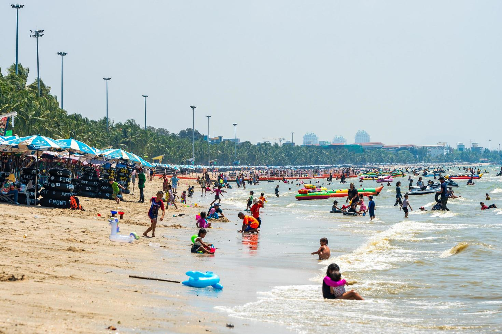
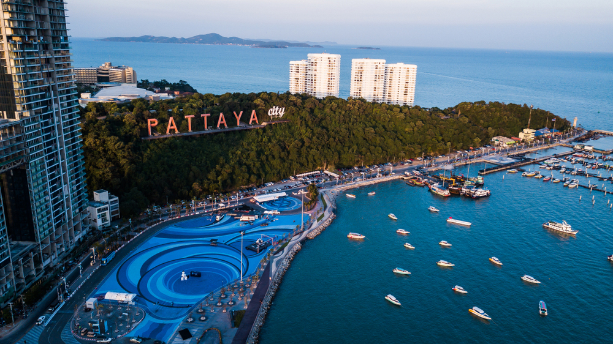
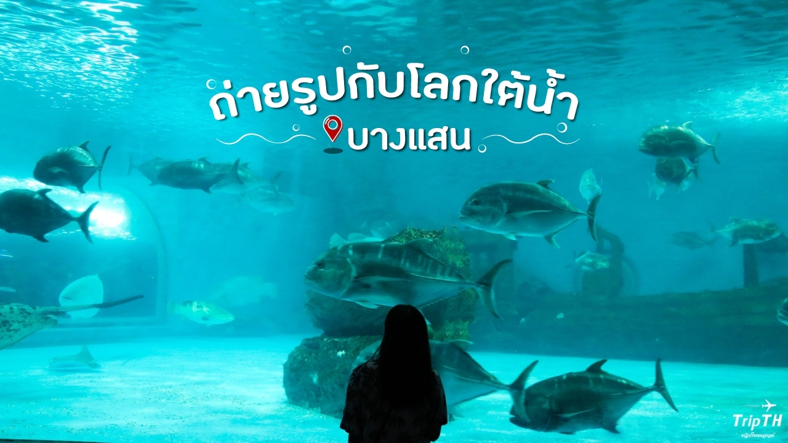
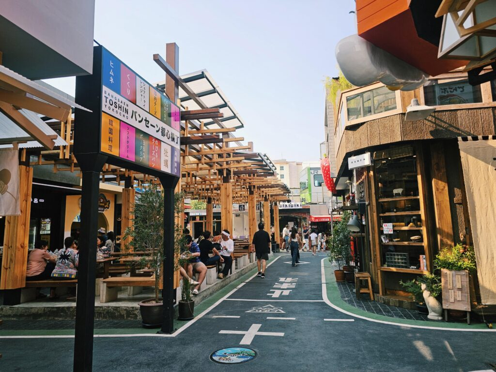

แนะนำสถานที่ท่องเที่ยวชลบุรี ประสบการณ์ที่คุณไม่ควรพลาด!
1. บางแสน
บางแสน ชายหาดยอดนิยมของชลบุรี เป็นจุดหมายปลายทางที่เหมาะสำหรับการพักผ่อนในทุกช่วงเวลา ด้วยระยะทางที่ใกล้กรุงเทพฯ ไม่กี่ชั่วโมง บางแสนมีทั้งชายหาดสวย น้ำทะเลใส และบรรยากาศที่อบอุ่นจากชุมชนท้องถิ่น นักท่องเที่ยวสามารถเพลิดเพลินกับกิจกรรมต่าง ๆ เช่น การเดินเล่นริมชายหาด ปั่นจักรยาน หรือชมพระอาทิตย์ตกที่สวยงาม ที่นี่ยังขึ้นชื่อเรื่องอาหารทะเลสดใหม่และตลาดนัดแหลมแท่นที่คึกคัก บางแสนคือสถานที่ที่ตอบโจทย์ทั้งการพักผ่อนและการสัมผัสบรรยากาศที่น่าประทับใจ
2. พัทยา
พัทยา เมืองท่องเที่ยวยอดนิยมที่ตั้งอยู่ไม่ไกลจากกรุงเทพฯ เพียงไม่กี่ชั่วโมง เป็นสถานที่ที่เต็มไปด้วยเสน่ห์ทั้งชายหาดที่สวยงาม กิจกรรมหลากหลาย และแหล่งท่องเที่ยวที่เหมาะสำหรับทุกคน ไม่ว่าจะเป็นการพักผ่อนริมทะเล การเยี่ยมชมเกาะล้าน หรือการสนุกสนานในสถานบันเทิงที่คึกคัก พัทยายังมีแหล่งช้อปปิ้งและร้านอาหารมากมาย ที่จะทำให้วันหยุดของคุณเต็มไปด้วยความสนุกสนานและความทรงจำที่น่าประทับใจ
3. พิพิธภัณฑ์สัตว์น้ำบางแสน
พิพิธภัณฑ์สัตว์น้ำบางแสน เป็นแหล่งท่องเที่ยวที่น่าสนใจสำหรับผู้ที่รักธรรมชาติและสัตว์ทะเล ตั้งอยู่ในจังหวัดชลบุรี ใกล้ชายหาดบางแสน ภายในพิพิธภัณฑ์มีการจัดแสดงสัตว์ทะเลหลากหลายชนิด ทั้งปลา ปู หอย และสัตว์น้ำอื่น ๆ ที่มีสีสันสวยงาม รวมถึงอุโมงค์สัตว์น้ำที่ทำให้ผู้เข้าชมได้สัมผัสประสบการณ์การเดินผ่านทะเลลึกและชมสัตว์ทะเลใกล้ชิด นอกจากนี้ยังมีการให้ความรู้เกี่ยวกับการอนุรักษ์สัตว์น้ำและสิ่งแวดล้อม ทำให้ที่นี่เป็นสถานที่ที่เหมาะสำหรับการเรียนรู้และพักผ่อนในวันหยุด
4. Bangsaen Toshin
Bangsaen Toshin เป็นสถานที่ท่องเที่ยวใหม่ที่ตั้งอยู่ในย่านบางแสน จังหวัดชลบุรี ซึ่งผสมผสานระหว่างความทันสมัยและเสน่ห์ของท้องถิ่นได้อย่างลงตัว ที่นี่เต็มไปด้วยร้านค้าสุดชิค ร้านอาหารอร่อย และกิจกรรมหลากหลายที่เหมาะสำหรับการพักผ่อนและการช้อปปิ้ง ไม่ว่าจะเป็นการเดินเล่นชมวิวทะเลหรือเพลิดเพลินกับอาหารท้องถิ่นที่สดใหม่ Bangsaen Toshin จึงเป็นสถานที่ที่ตอบโจทย์ทั้งการท่องเที่ยวแบบครอบครัวและการใช้เวลาชิลล์ ๆ กับเพื่อนหรือคนรักในบรรยากาศที่เต็มไปด้วยความสนุกสนานและความสบายใจ
5. เกาะสีชัง

เกาะสีชัง ตั้งอยู่ในอ่าวไทย จังหวัดชลบุรี เป็นเกาะที่มีความงดงามทางธรรมชาติและประวัติศาสตร์ที่น่าสนใจ เพียงแค่ข้ามเรือจากท่าเรือศรีราชาไม่กี่นาที นักท่องเที่ยวก็จะได้สัมผัสกับบรรยากาศที่เงียบสงบและสวยงามของทะเล น้ำทะเลใส และหาดทรายขาวสะอาด เกาะสีชังมีสถานที่ท่องเที่ยวสำคัญ เช่น พระราชวังบางปู ที่เป็นอดีตที่ประทับของพระราชวงศ์ รอยพระบาทบนเขา และจุดชมวิวที่มองเห็นทะเลกว้างไกล ที่นี่จึงเป็นสถานที่ที่เหมาะสำหรับการพักผ่อนท่ามกลางธรรมชาติและความสงบ